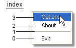

snoozesoft.systray4j.SysTrayMenu
snoozesoft.systray4j.SysTrayMenu
|
SysTray for Java v2.4.1 |
|||||||
| PREV CLASS NEXT CLASS | FRAMES NO FRAMES | |||||||
| SUMMARY: NESTED | FIELD | CONSTR | METHOD | DETAIL: FIELD | CONSTR | METHOD | |||||||
java.lang.Object
This class is the main interface of this package. Access to the system tray begins here when an instance of this class is created.
Each instance consists of:
The items of the menu are placed in bottom-up order:
|  |
| Field Summary | |
static snoozesoft.systray4j.SysTrayMenu.Separator |
SEPARATOR
The separator object. |
static java.lang.String |
VERSION
|
| Constructor Summary | |
SysTrayMenu(SysTrayMenuIcon icon)
Convenience constructor. |
|
SysTrayMenu(SysTrayMenuIcon icon,
java.lang.String toolTip)
Convenience constructor. |
|
SysTrayMenu(SysTrayMenuIcon icon,
java.lang.String toolTip,
java.util.Vector items)
'Real' construcor. |
|
SysTrayMenu(SysTrayMenuIcon icon,
java.util.Vector items)
Convenience constructor. |
|
| Method Summary | |
void |
addItem(SysTrayMenuItem item)
Inserts an item at the top of this menu. |
void |
addItem(SysTrayMenuItem item,
int index)
Inserts an item to this menu. |
void |
addSeparator()
Inserts a separator at the top of this menu. |
void |
addSeparator(int index)
Inserts a separator to this menu. |
static void |
dispose()
In some cases System.exit() is not the way you want
to exit your application. |
SysTrayMenuIcon |
getIcon()
Getter for the assigned icon. |
SysTrayMenuItem |
getItem(java.lang.String label)
Returns the first item labeled as label or null if
no such item could be found. |
SysTrayMenuItem |
getItemAt(int index)
Returns the item at position index. |
int |
getItemCount()
Getter for the size of this menu. |
java.lang.String |
getToolTip()
Getter for the assigned tooltip. |
void |
hideIcon()
Hides the icon, if it is currently visible. |
static boolean |
isAvailable()
Enables checking whether SysTray for Java is available on this platform. |
boolean |
isIconVisible()
Getter for the visibility of the icon. |
static void |
main(java.lang.String[] args)
Prints out a version string and exits. |
void |
removeAll()
Removes all menu items. |
void |
removeItem(java.lang.Object item)
Removes the passed item from this menu. |
void |
removeItemAt(int index)
Removes the item at position index from this menu. |
void |
setIcon(SysTrayMenuIcon icon)
Sets the icon to be displayed in the system tray for this menu. |
void |
setItems(java.util.Vector items)
Rebuilds this menu according to the passed vector. |
void |
setToolTip(java.lang.String toolTip)
Sets the tooltip of this menu. |
void |
showIcon()
Shows the icon, if it is currently hidden. |
| Methods inherited from class java.lang.Object |
equals, getClass, hashCode, notify, notifyAll, toString, wait, wait, wait |
| Field Detail |
public static snoozesoft.systray4j.SysTrayMenu.Separator SEPARATOR
public static java.lang.String VERSION
| Constructor Detail |
public SysTrayMenu(SysTrayMenuIcon icon)
Convenience constructor.
Calls the 'real' constructor with empty tooltip and items arguments.
icon - The systray icon of this menu.
public SysTrayMenu(SysTrayMenuIcon icon,
java.lang.String toolTip)
Convenience constructor.
Calls the 'real' constructor with empty items argument.
icon - The systray icon of this menu.toolTip - The tooltip displayed when the cursor is over the icon.
public SysTrayMenu(SysTrayMenuIcon icon,
java.lang.String toolTip,
java.util.Vector items)
'Real' construcor.
Constructs a new menu consisting of the passed icon displayed in the system tray, the tooltip, and a popup menu appearing when the user right-clicks the systray icon. The menu items are taken from the passed vector, and inserted in bottom-up order.
icon - The systray icon of this menu.toolTip - The tooltip displayed when the cursor is over the icon.items - The menu items.
public SysTrayMenu(SysTrayMenuIcon icon,
java.util.Vector items)
Convenience constructor.
Calls the 'real' constructor with empty tooltip argument.
icon - The systray icon of this menu.items - The menu items.| Method Detail |
public void addItem(SysTrayMenuItem item)
item - The new menu item.
public void addItem(SysTrayMenuItem item,
int index)
item - The new menu item.index - The position of the new menu item.public void addSeparator()
public void addSeparator(int index)
index - The position of the new separator item.public static void dispose()
System.exit() is not the way you want
to exit your application. Than you should call this function to
make sure that the SysTray for Java thread terminates along with
your threads.
public SysTrayMenuIcon getIcon()
public SysTrayMenuItem getItem(java.lang.String label)
label or null if
no such item could be found.
label - The label of the menu item to look for.
null.public SysTrayMenuItem getItemAt(int index)
index.
index - The position of the menu item to look for.
null if the item at the given position is
a separator.public int getItemCount()
public java.lang.String getToolTip()
public void hideIcon()
public static boolean isAvailable()
Enables checking whether SysTray for Java is available on this platform.
On win32 this method returns false, if the native library could not be loaded. On KDE an attempt is made to establish a connection to the SysTray for Java Daemon. If connecting fails, this methods returns false.
public boolean isIconVisible()
public static void main(java.lang.String[] args)
args - ignored.public void removeAll()
public void removeItem(java.lang.Object item)
item - The menu item to remove.public void removeItemAt(int index)
index from this menu.
index - The position of the menu item to remove.public void setIcon(SysTrayMenuIcon icon)
icon - The systray icon of this menu.public void setItems(java.util.Vector items)
items - The new menu items.public void setToolTip(java.lang.String toolTip)
toolTip - The tooltip displayed when the cursor is over the icon.public void showIcon()
|
SysTray for Java v2.4.1 |
|||||||
| PREV CLASS NEXT CLASS | FRAMES NO FRAMES | |||||||
| SUMMARY: NESTED | FIELD | CONSTR | METHOD | DETAIL: FIELD | CONSTR | METHOD | |||||||